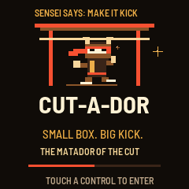

SENSEI DOJO / NATIVE UI CODE RENDER
THE MATADOR
OF THE CUT.

A silent 2.6-second welcome. Touch a performance control or send MIDI to skip it. The main loop keeps handling USB, recovery and the watchdog. This image is rendered from the native UI code; it is not a photograph of tested hardware.
BACK TO THE DOJO ↗